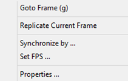

|
The ClipEditor tool analyzes, visualizes and edits SDK recorded files. To start working with a recorded file, use the File->Open menu option and select the file.
Figure 102: The ClipEditor File Menu
This file menu (see Figure 102) provides the following operations:
| • | Open – Open an SDK recorded file. |
| • | Close – Close the currently opened file. The tool prompts if there are unsaved changes. |
| • | Save – Save the stream(s) to a new file. You can choose the stream(s) in a stream selection dialog, as shown in Figure 103. |
Figure 103: Stream Selection Window
| • | Compress – Save all streams to a new file with compression. |
| • | Decompress – Save all streams to a new file without compression. |
| o | From Image List – Create new SDK recorded file from all frames in separate image files. The header (header.bin) and layout (layout.txt) are generated if not available. |
| o | As Image List – Extract all frames and service data to a set of image list. |
| o | Current Frame – Save the current frame to an image file. |
| • | Exit – Exit the program. The tool will prompt if there are unsaved changes. |

Figure 104: The ClipEditor Edit Menu
The Edit menu (see Figure 104) provides additional navigation and editing operations:
| • | Goto Frame – Jump to the specific frame position in current stream. You can use the keyboard shortcut 'g' to trigger this feature. |
| • | Replicate Current Frame – Replicate currently selected frame several times and shift the timestamps to the right of the remaining frames in the stream. Replication options are selected through an additional dialog (see Figure 105): |
Figure 105: The Replicate Current Frame Dialog
| o | Current frame – Shows the frame number of the frame that will be replicated. |
| o | Number of copies – Controls how many copies of the frame to insert. |
| o | Framerate – Sets the interval between timestamps of inserted frames. |
| o | Depth stream synchronization – Apply the replication operation to the depth stream also. This is useful to maintain synchronization in the remaining portion of the clip. |
| • | Synchronize by – Select a master stream to synchronize the streams to. You can select the master stream in a dialog box, as shown in Figure 106. If you select the color stream as master, for each color frame, the tool finds the closest depth frame and sets to the same time stamp as the color frame. The tool may drop or duplicate certain depth frames. Otherwise, for each depth frame, the tool finds the closest color frame and sets to the same time stamp as the depth frame. The tool may drop or duplicate certain color frames. |
Figure 106: Master Stream Selection Dialog
| • | Set FPS – Replace the timestamps of the current stream frames to have constant time stamp difference based on the specified fps value. |
| • | Properties – Show the properties for viewing or modification, as illustrated in Figure 107. You can perform the following operations: |
| o | Load from XML: Load the device properties from an XML file. See Table 21 for the XML file format. |
| o | Save to XML: Save the device properties to an XML file. |
| o | Modify Property: Modify the device property values. |

Figure 107 The Device Property Editing Window
<?xml version="1.0" encoding="utf-8"?>
<!-- This file contains a set of camera device properties for ClipEditor -->
<SDKFormat>
<Properties append="0">
<!-- attribute "append" defines a type of properties' loading -->
<!-- append=1 : all properties from the file will be ADDED to the list -->
<!-- append=0 : any existing list will be cleaned and filled with data from the file -->
<Prop name="PROPERTY_COLOR_EXPOSURE" label="1" value="15.625000"/>
<!-- each string has 3 attributes and it describes one property: name / label / value -->
<Prop label="2" value="55.000000"/>
<!-- attribute "name" can be skipped -->
...
<Prop name="PROPERTY_DEPTH_UNIT" label="204" value="31.250000"/>
<!-- if a property is in the list, it will be changed to new value -->
<!-- otherwise, new property will be added to the list -->
</Properties>
</SDKFormat>
|
Table 21: The Device Property XML File Format
Figure 108 The ClipEditor Main Window
The main screen (see Figure 108) visualizes the current stream and provides navigation and edit options. The stream can be displayed in the playback mode or in the step-by-step mode. The frame display window at the upper left corner shows the current frame of the current stream with the overlaid zero-based frame number and 1-based frame position in the stream (4/30 in Figure 108).
The navigation panel below the display window has the following control elements:
| • | Jump to the first frame in the stream. |
| • | Play. (Enter the playback mode.) |
| • | Pause. (Enter the step-by-step mode.) |
| • | Jump to the last frame in the stream. |
At the upper right corner, some additional frame information is displayed:
| • | The time stamp of the frame in microseconds. |
| • | The time stamp difference with between the previous and next frames. |
| • | The frame index (1-based). |
| • | The number of frames (of the current stream) in the recorded file. |
The right panel provides stream editing options:
| • | Delete Frame – Remove the current frame from the stream; the timestamps of any remaining frames remain unchanged. |
| • | Delete ALL Previous – Remove all frames prior to the current frame. |
| • | Delete ALL Next – Remove all frames after the current frame. |
| • | Delete Frames – Remove a range of frames. |
| • | Undo All Changes – Cancel the changes and restore the original stream structure. |
The buttons at the lower left corner enables additional operations:
| • | The Layout button displays the stream structure (see Figure 109) either in the file order (how frames are stored on the disk) or the time order (based on the time stamp information). The displayed numbers are correspond to the stream index of each frame. |
Figure 109: The Stream Layout Information
| • | The Stream button shows additional file information (see Figure 110) and selects the current stream for display and editing. |
Figure 110: The Stream Header Information
| • | The TimeLine button shows the time line distance among the frames, as illustrated in Figure 111. The green line is the average frame rate of the stream and the yellow line is the instant frame rate of each frame. |

Figure 111: The Time Line Information
|